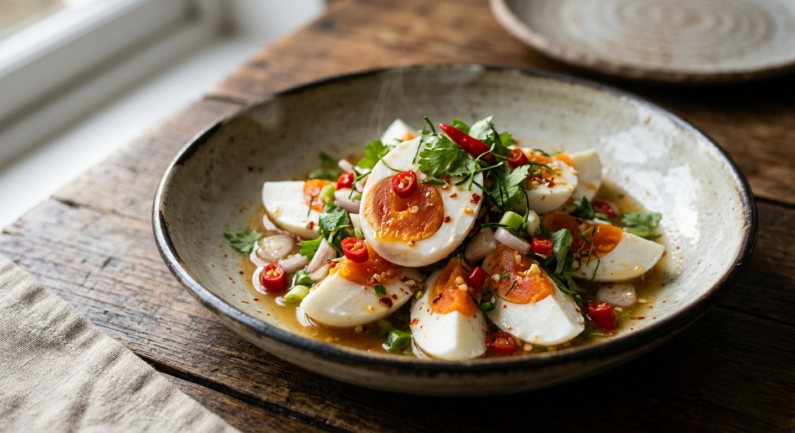

Yum Kai Kem is a beloved Thai salad that showcases the rich, creamy texture of salted duck eggs paired with a vibrant, tangy dressing. This simple yet flavourful dish combines the umami depth of salted egg yolks with fresh lime juice, fish sauce, and aromatic herbs, creating a perfect balance of salty, sour, and spicy flavours that's quintessentially Thai.
Dressing variations: Traditional recipes vary between using just lime juice and fish sauce versus adding palm sugar for sweetness. Some sources prefer white soy sauce instead of fish sauce for a cleaner flavour. Egg preparation: While most sources boil the eggs, some recommend steaming them for a more tender texture. Heat level: The number of chillies ranges from 2-3 for mild heat to 8-10 for those who prefer it fiery. Additional ingredients: Some regions add dried shrimp or crispy shallots for extra texture and umami depth.
Find authentic Thai ingredients for this recipe at top UK Asian grocers.
Find Ingredients Near You